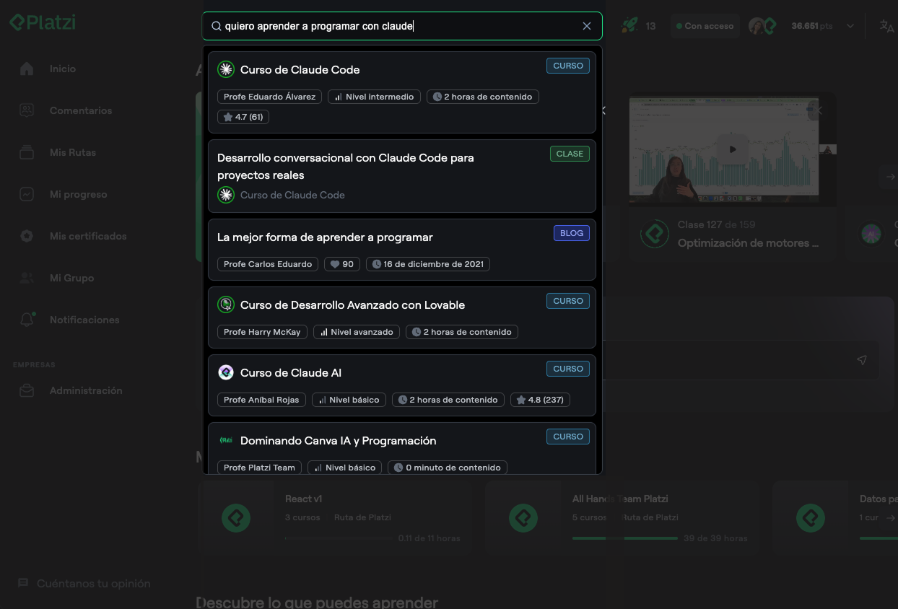
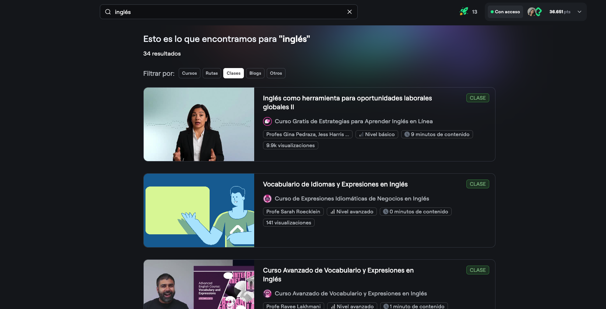
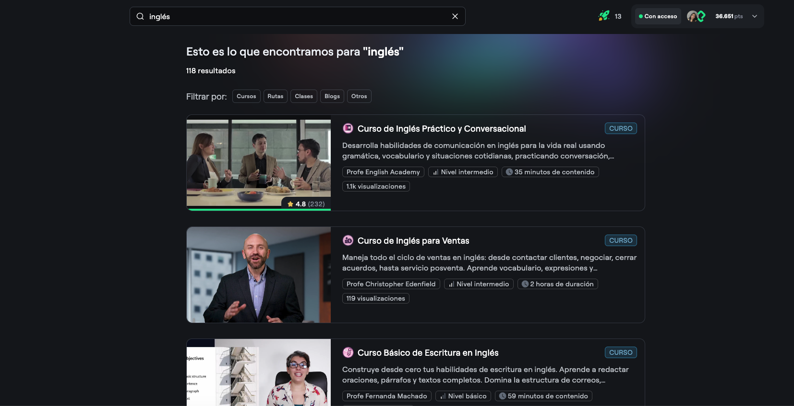
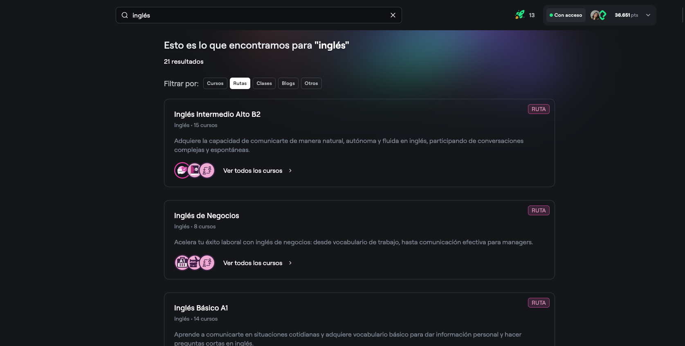

AI-powered course search
Personalized search using vector databases and student data to surface the most relevant learning content from 1,900+ courses.
Impact
Search people actually click
The new search system dramatically improved discoverability and engagement across the platform.
+10ppClick-through rate on the top 3 results
5,000+Pieces of content searchable with semantic understanding
18KDaily searches from 8K students — one of the most used tools
01 — Problem
Search that couldn’t find what students needed
40%+of search results received zero clicks
<2%of searches led to a course enrollment
ALow click-throughMost results were irrelevant or unhelpful, and very few searches turned into enrollments.
BPoor user experienceFeedback described search as unintuitive and returning results that didn’t match what students were looking for.
CGeneric rankingNo student context, history or preferences — everyone saw the same results regardless of their needs.
02 — Solution
Intelligent, context-aware search
We rebuilt search on vector databases combined with student behavioral data to deliver personalized, relevant results.
Vector-based searchAll course content vectorized for semantic understanding beyond keyword matching.
Personalized rankingViewing history weights results toward topics and formats each student already engages with.
Simplified interfaceA redesigned results page shows more content above the fold, so students scan and choose faster.
03 — How it works
Search system architecture
1
Content vectorization
Every piece of content becomes a vector with certain characteristics having more weight. The index updates automatically when new content is available.

2
Personalized query processing
Each query is combined with the courses a student viewed in recent months. Only results above a minimum relevance threshold appear, aligned with their trajectory.

3
Intelligent re-ranking
Raw vector results are re-ranked with quality signals: relation to recently viewed content, recent launches, ratings and completion rates.

4
Unified, scannable results
All content types in one clean layout with clear differentiation between courses, paths and more — less cognitive load, faster decisions.

04 — Experimentation
Five tests, one metric: top-result CTR
Every component was validated with an experiment before it shipped.
T1External vs. internal searchOur vector-based system with personalization significantly outperformed a generic third-party tool.
T2Vector contentAdding module titles to vectors improved relevance without hurting performance.
T3Title vector separationDedicated title vectors improved precision on exact-match queries while keeping broad semantic search.
T4Tag removalRemoving noisy AI-generated tags from vectors actually improved result quality.
T5Interface simplificationA cleaner, more scannable layout increased CTR in the top two positions.
05 — Key learnings
What I learned building this
01
Context is everything
Adding student behavioral data turned search from generic into personal.
02
Experiment relentlessly
Structured A/B tests on each component revealed non-obvious improvements that assumptions would have missed.
03
Simplicity wins
Both the architecture and the interface got better by simplifying rather than adding complexity.
04
Invest in high-traffic features
Prioritizing heavily used features yields the best return on product development effort.